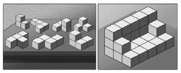

Geçen asrın ortalarında, iki genç bilim adamı, dünyayı değiştirmesi gereken bir deney yaptı. Ama değişen hiçbir şey olmadı.
Harry F. Harlow, Wisconsin Üniversitesi'nde psikoloji profesörü olarak görev yapıyordu. 1940'larda primat davranışlarını inceleyen ilk laboratuvarlardan birini kurmuştu. 1949 yılında bir gün Harlow ve iki meslektaşı, sekiz rhesus cinsi maymunu, öğrenme konulu iki haftalık bir deney için bir araya getirdi. Araştırmacılar, resimdekine benzer basit bir mekanik bulmaca hazırladı. Bulmacayı çözmek için üç şartı yerine getirmek gerekiyordu. Öncelikle dikey olarak gömülü iğneyi dışarı çekmek, kancayı açmak ve son olarak menteşeli kapağı kaldırmak gerekiyordu. Sizin için, benim için çok kolay olan bu işlem, altı-yedi kiloluk bir laboratuvar maymunu için ise çok zordu.
Harlow'un bulmacasının başlangıç hali solda ve çözülmüş hali sağda. Çizim: Rob Ten Pas.
Araştırmacılar, maymunların nasıl tepkiler vereceklerini gözlemlemek ve onları iki haftanın sonunda girecekleri sorun çözme testlerine hazırlamak için bu mekanizmaları kafeslere koydular. Fakat neredeyse koyar koymaz çok tuhaf bir şey oldu. Harici bir zorlama ve araştırmacılardan herhangi bir komut gelmemiş olmasına rağmen maymunlar büyük bir dikkat, konsantrasyon ve keyifle bulmacalarla oynamaya koyuldular. Çok geçmeden, mekanizmanın nasıl çalıştığını keşfetmeye başladılar. Deneyin on üçüncü ve on dördüncü günlerinde Harlow, maymunları teste tabi tutuncaya kadar geçen sürede maymunlar ciddi bir ilerleme kaydetmişlerdi. Bulmaca mekanizmalarını sık sık çözüyor, üstelik bunu gayet de hızlı bir şekilde yapıyorlardı. Çözme girişimlerinin üçte ikisinde altmış saniyeden kısa sürede çözüme ulaşıyorlardı.
Bu durum biraz garipti açıkçası. Kimse maymunlara iğneyi çıkarmayı, kancayı ve kapağı açmayı öğretmemişti. Başardıklarında kimse onlara ödül olarak yiyecek vermemiş, başlarını okşamamış, hatta alkışlamamıştı. Ve bu durum, primatlara –ve ayrıca daha az tüylü, daha büyük beyinli, "insan" olarak adlandırılan primatlara– dair genel kabul görmüş davranış kalıplarına ters düşüyordu.
Bilim adamları o sıralarda davranışlarda iki ana güdünün belirleyici olduğunu biliyordu. İnsanlar ve hayvanlar açlıklarını gidermek için yemek yiyor, susuzluklarını gidermek için su içiyor, şehvani güdülerini tatmin etmek için ürüyorlardı. Fakat laboratuvarda yaşanan durum böyle bir şey değildi. Harlow, "çözüm, onlara ne yiyecek, ne içecek ne de cinsel tatmin sağlıyordu" diye yazacaktı.[1]
Ama geri kalan diğer güdü de maymunların bu garip davranışını izah edemiyordu. Biyolojik motivasyonlar içeriden gelirken, diğer güdü dışarıdan geliyordu. Belli şekillerde davranıldığında ortamdan gelen ödül ve cezalardı söz konusu güdü. O tür harici güçlere kayıtsız kalmayan biz insanlar için gayet geçerli bir husustu bu. Maaşımızı artıracağınızı vaat ederseniz daha gayretli çalışırız. Bir sınavdan yüz puan almamız gerekirse dersimize daha çok çalışırız. Geç kalmamız veya bir formu eksik ya da hatalı doldurmamız durumunda ücretimizi kesmekle bizi tehdit ederseniz zamanında gelir ve her kutucuğu işaretleriz. Gelgelelim maymunların durumunda bu önermeler geçerli değildi. Harlow'un da yazdığı ve muhtemelen kafasını düşünceli bir şekilde kaşıyarak yüksek sesle dillendirmiş olabileceği gibi "Herhangi özel veya harici bir dürtü olmadan edinilen bilgi ve gösterilen ehil performans dolayısıyla bu araştırmada gözlemlenen davranış şekli, motivasyon kuramına ilişkin olarak bazı ilginç soruların ortaya çıkmasına neden olmuştur."
Peki bunun açıklaması neydi?
Harlow, bu soruyu cevaplamak için yeni bir kuram önerdi. Kuram, üçüncü bir güdü ortaya koyuyordu. Harlow, "Görevin icrası içsel bir ödül sağladı" diyordu. Maymunlar, sırf bulmaca çözmekten haz aldıkları için çözmüşlerdi. Sevmişlerdi bulmaca çözmeyi. Görevin verdiği keyif, kendi ödülünü de yaratmış oluyordu böylece.
Bu kavram radikal olarak değerlendirilebilir. Ama daha sonra olanlar, kafa karışıklığını ve tartışmaları daha da derinleştirecekti. Harlow'un koyduğu adla "içsel motivasyon" belki de gerçekti. Ama diğer iki güdünün altında yer alıyordu. Maymunlara ödül, mesela pirinç verilseydi, bulmacaları çözmede daha yüksek bir performans göstereceklerine şüphe yoktu. Ancak Harlow bu yaklaşımı sınadığında maymunların daha fazla hata yaptıklarını, bulmacaları çözme girişimlerinin sayısal anlamda azaldığını saptadı. Harlow, "Mevcut deneye yiyecek unsurunun sokulması, performans düşüklüğüne yol açmıştır ki bu duruma literatürde rastlanmamaktadır" diye yazacaktı.
Çok garip bir durum vardı ortada. Bilimsel bir dille ifade etmek gerekirse bu aynı, çelik bir topu, hızını ölçmek amacıyla eğimli bir düzlemden aşağı yuvarlamaya benziyordu. Ama top, yuvarlanmak yerine havalanıp uçuyordu. Bu da yerçekimsel kuvvetlerin davranışlarımız üzerindeki etkilerine dair anlayışımızın yetersiz kaldığını, değişmez olarak kabul ettiğimiz yasaların birçok açığı olduğunu gösteriyordu. Harlow, maymunların bulmacaları tamamlama konusunda sergiledikleri "güç ve sebat"a özellikle dikkat çektikten sonra şöyle devam etti:
Görünen o ki ... bu güdü diğer güdüler kadar temel ve güçlü olabilir. Dahası, öğrenme sürecini pekiştirmekte en az aynı oranda etkili olduğuna da inanmak için sebebimiz bulunmakta.[2]
Ancak o sıralarda bilim çevreleri, hakim olan ilk iki güdüden başkasını görecek durumda değildi. Dolayısıyla Harlow, alarm zilini çalmıştı elde ettiği araştırma sonucuyla. Bilim adamlarına "kuramsal çöplüğümüzün büyük kısmının kapısına zincir vurmak" gerektiğini anlatıyor, insan davranışının daha taze, daha doğru izahlarını bulmanın şart olduğunu savunuyordu.[3] Neyi neden yaptığımıza dair açıklamaların yetersiz ve eksik olduğu konusunda da uyarıda bulunuyordu. İnsan davranışlarını gerçek anlamda kavramak için bu üçüncü güdüyü de hesaba katmak gerektiğine inanıyordu.
Sonra bu fikri neredeyse bütünüyle rafa kaldırdı.
Yerleşik düşünceyle savaşmak ve motivasyona dair daha kapsayıcı bir görüş ileri sürmektense Harlow bu tartışma yaratan araştırmalarına son vermeyi tercih ederek sevginin bilimsel boyutlarına yoğunlaşmayı yeğledi ve bu araştırmalarıyla tanındı.[4] Üçüncü güdüyle ilgili ortaya attığı görüş, psikoloji literatürünün duvarlarına çarpıp geri dönmekle birlikte davranış biliminin ve özümüze yönelik kavrayışımızın sınırları içinde kalmaya devam etti. Harlow'un Wisconsin'deki bir laboratuvarın masasına kışkırtıcı bir şekilde bırakıp gittiği konuyu bir başka bilim adamının ele alması için yirmi yıl geçmesi gerekecekti.
1969 yılının yazında Edward Deci, Carnegie Mellon Üniversitesi'nin psikoloji bölümünün son sınıfında okuyordu. Bir bitirme tezi konusu bulması gerekiyordu. Daha öncesinde Wharton'dan MBA bursu kazanmıştı. Motivasyon konusu ilgisini çekiyordu çekmesine ama akademisyenlerin ve işadamlarının konuyu yanlış anlamasından çekiniyordu. Fakat sonunda Harlow'un izinden gitmeye karar vererek bir bulmaca yardımıyla konuyu araştırmaya koyuldu.
Deci, Soma bulmaca küpü olarak bilinen, o sıralarda Parker Brothers firmasınca satılan ve YouTube sayesinde bugün bile bir kült olma özelliğini korumayı başarmış bir tür oyuncağı seçti. Aşağıda görebileceğiniz bulmaca yedi plastik parçadan meydana geliyor. Altı tanesi dört adet bir inçlik küpten oluşuyor. Bir tanesinde de üç adet bir inçlik küp bulunuyor. Oyuncular yedi parçayı birkaç milyon farklı kombinasyon halinde birleştirebiliyor ve soyut şekillerden bildik objelere kadar çok farklı formlar meydana getirebiliyor.

Soma küpünün birleştirilmemiş hali (solda) ve milyonlarca biçimsel formasyondan biri şeklinde birleştirilmiş hali.
Araştırma için Deci, erkek ve kız öğrencileri deney grubu (A grubu diyelim buna) ve kontrol grubu (buna da B grubu diyelim) olarak ikiye ayırdı. Her bir öğrenci, üç gün arka arkaya düzenlenen bir saatlik seanslara katıldı.
Seanslarda şunlar yapıldı: Öğrenciler bir odaya girip üstünde yedi adet Soma küpü parçası, üç bulmaca konfigürasyonu çizimi ve Time, The New Yorker ve Playboy dergilerinin birer nüshası bulunan bir masaya oturdu. (Hey, yıl 1969'du.) Deci, masanın karşı tarafındaki sandalyeye geçip talimatları açıklıyor ve bir kronometre ile zaman tutuyordu.
İlk seansta her iki grubun üyeleri, Soma parçalarını önlerinde duran konfigürasyonlara göre birleştirmek durumundaydı. İkinci seansta aynı şeyi farklı çizimlerle yaptılar. Ama bu sefer Deci, A grubuna başarılı bir şekilde yapacakları her şekil için bir dolar verileceğini söyledi. (Bu, günümüzün altı dolarına denk düşüyor.) B grubu ise yeni çizimlere göre küpleri bir araya getirecek ama karşılığında para almayacaktı. Nihayet üçüncü seansta her iki gruba da yeni çizimler verildi ve hiçbir karşılık almadan, aynen birinci seansta olduğu gibi bu çizimlere göre küpleri dizmeleri istendi. (Bkz: aşağıdaki tablo).
Gruplara Göre İstenenler
| 1.Gün | 2.Gün | 3.Gün | |
| A grubu | Ödül yok | Ödül var | Ödül yok |
| B grubu | Ödül yok | Ödül yok | Ödül yok |
Her seansın ortasında ise bir ara veriliyordu. Bir katılımcı Soma parçalarını üç çizimden ikisine göre yapıp bitirdiğinde Deci, deneyi durdurdu. Dördüncü çizimi belirmek için küpleri birleştirme sürelerini bir bilgisayara yüklemesi gerektiğini söylüyordu. Oda büyüklüğünde anabilgisayarların standart olduğu, masaüstü bilgisayarların henüz ortalarda görülmediği 1960'ların sonlarında bunun anlamı Deci'nin bir süre odadan uzaklaşması gerektiği idi.
Dışarı çıkarken katılımcılara "Birkaç dakika sonra döneceğim. Siz ben yokken istediğinizi yapabilirsiniz" diyordu. Ama Deci aslında antika bir bilgisayara sayı girişi filan yapmaya gitmiyordu. Onun yerine deney odasına bitişik, tek taraflı bir ayna ile içeriyi görebileceği yan odaya geçiyordu. Orada, tamı tamına sekiz dakika boyunca insanların tek başına kaldığında ne yaptığını gözlemliyordu. Bulmaca ile uğraşmaya devam mı ediyorlardı? Üçüncü çizimi yeniden oluşturmaya mı çalışıyorlardı? Dergileri karıştırmak, orta sayfa güzelini incelemek, boş boş bakınmak veya iki dakika kestirmek gibi şeyler mi yapıyorlardı?
İlk seansta beklendiği üzere A grubu ile B grubu katılımcılarının sekiz dakikalık boş süre içinde yaptıkları arasında pek bir fark görülmedi. Her iki grubun üyeleri de ortalama üç buçuk ile dört dakika arasında bulmaca ile oynamaya devam ederek onu ilginç bulduklarını göstermiş oldu.
İkinci gün, yani A grubu üyelerine her başarılı küp birleştirme girişiminden sonra para verildiği, B grubu üyelerine ise herhangi bir ödeme yapılmadığı gün, bu ikinci grubun üyeleri boş zamanlarında ilk gün ne yaptılarsa aşağı yukarı aynısını yaptılar. Fakat para verilen grup üyeleri birden bire Soma bulmacalarına gerçekten bir ilgi duymaya başladı. A grubu üyeleri, ikinci gün ortalama olarak beş dakikadan uzun bir süre bulmaca ile uğraştı. Belki üçüncü çizim için antrenman yapmak, belki de Deci döndüğünde ondan bir bira parası daha kazanma şanslarını artırmak için bulmacayla ilgilenme sürelerini uzatmışlardı. Bu durum gayet mantıklı, öyle değil mi? Motivasyona dair inanışlarımızla son derece tutarlı: Bana ödül verirsen daha çok çalışırım.
Gelgelelim, üçüncü gün olanlar, Deci'nin motivasyon olgusunun enteresan bir işleyişi olduğuna dair şüphelerini doğrularken modern yaşamın genel kabul görmüş ilkelerinden birini de tartışmaya açacaktı. Deci üçüncü gün A grubuna, sadece ilk gün ödeme yapmaya yetecek miktarda para olduğunu söyledi. Üçüncü gün yapılacak seanslarda ödeme yapılmayacaktı. Daha sonra deneyleri planladığı şekilde yürüttü: İki bulmaca çözümü ve Deci'nin deneyi kesişi...
Takip eden sekiz dakikalık boş sürede, para ödenmeyen B grubundaki denekler, daha önceki seanslara göre bulmaca ile daha uzun süre oynadılar. Belki ilgileri artmıştı veya belki de istatistiksel bir gariplik söz konusuydu. Ama A grubundaki deneklerin tepkisi farklı oldu. Bulmaca ile oynamaya daha az zaman harcadılar. Para aldıkları seans sırasında harcadıkları süreden iki dakika ve daha da ilginci, bulmacalarla ilk karşılaştıkları ve göründüğü kadarıyla onlarla oynamaktan keyif aldıkları birinci seansta harcadıkları süreden tam bir dakika daha az ilgilendiler.
Deci, bir anlamda Harlow'un yirmi sene kadar önce yaptığı keşfi doğruladı ve motivasyon güdüsünün bilim adamları ve sıradan insanların düşündüğünün tam tersi yönünde işleyen yasalarla şekillendiğini ortaya koymuş oldu. İşyerinden oyun sahasına kadar her zeminde insanları neyin harekete geçirdiğini biliyorduk. Ödüller, özellikle de yüzü sıcak olan nakit para, insanların ilgisini ve performansını artırıyordu. Deci'nin bulduğu ve kısa bir süre yaptığı ilave iki araştırma ile de doğruladığı şey ise bunun neredeyse tam tersi idi. Şöyle yazıyordu Deci: "Belli bir faaliyet için harici bir ödül olarak para kullanıldığında denekler, o faaliyet için duydukları içsel ilgiyi yitiriyorlar."[5] Ödüller, tıpkı bir fincan kahvenin size birkaç saatlik çalışma enerjisi verişi gibi kısa süreli ilgi artışı sağlayabilir. Ama etkisi kısa sürede geçer ve daha da kötüsü kişinin projeyi devam ettirme konusundaki uzun erimli motivasyonunu da azaltabilir.
Deci şöyle diyordu: "İnsanların yenilik ve mücadele konusu arama, becerilerini uygulama ve geliştirme, keşfetme ve öğrenme yetenekleri doğuştan gelir." Ama bu üçüncü güdü, diğer ikisinden hayli narindi. Yaşamak için doğru ortama ihtiyaç duyuyordu. Deci, "Çocuklarda, personelde, öğrencilerde, vs. içsel motivasyonu geliştirmek ve güçlendirmek isteyen biri, maddi ödüller gibi harici kontrol sistemlerine odaklanmamalıdır" diye yazıyordu raporunda.[6] İşte Deci için her şey böyle başladı. Ömrü boyunca neyi neden yaptığımız düşündü. Bunun için hayatını ortaya koyan Deci, bu uğurda bazen meslektaşlarıyla ters düşmekle kalmadı, çalıştığı eğitim kurumundan kovuldu ve bütün kurumsallaşmış kanılarla sürekli mücadele etti.
Soma deneylerinden kırk yıl sonra bir bahar sabahı Deci bana, "Çok tartışmalı bir konuydu," dedi. "Kimse ödüllerin negatif bir etkisi olacağını düşünmemişti."
Bu kitabın konusu motivasyondur. Konuya dair bildiklerimizin büyük kısmının yanlış olduğunu, Harlow ve Deci'nin yıllar önce yaptıkları saptamaların gerçeklere çok daha yakın durduğunu size bu kitapta göstereceğim. Sorun şu ki birçok şirket, bizi neyin motive ettiğini henüz kavramış değil. Sadece şirketler değil, devletler ve dernekler de dahil olmak üzere birçok kurumda hâlâ, kökleri bilimden çok folklorda bulunan eski, mercek altına yatırılmamış yanlış kanılar, insan potansiyelini ve bireysel performans olgusunu anlamak için kullanılıyor. İşe yaramadıkları, yarardan çok zarar getirdikleri günbegün yeni yeni kanıtlarla ortaya çıksa bile hâlâ, kısa erimli teşvik planları ve performansa göre ücret politikaları uyguluyorlar. Yetmezmiş gibi bu uygulamalar, gelecekteki işgücümüz olan çocuklarımızın iPod'larla, nakit para ile ve pizza kuponları ile öğrenmeye teşvik ettiğimiz okullarımıza kadar girmiş durumdalar. Ters giden bir şeyler olduğu açık.
Neyse ki çözümü çok uzaklarda değil, Harlow ve Deci'nin başlattıkları araştırmaları sürdüren ve son yarım asırdır sessizce yürüttükleri çalışmalarla motivasyon olgusuna dair dinamik bir bakış açısı geliştiren davranış bilimcilerinin çalışmalarında bulabiliyoruz. Uzun bir zamandır bilimin bilip söylediği ile iş dünyasının yaptığı birbiriyle çelişiyor. Bu kitabın amacı bu çelişkiyi ortadan kaldırmaktır.
Kitap, üç kısımdan oluşuyor. Birinci kısımda ödül ve ceza sistemimizdeki kusurları ele alacak, motivasyon konusunda yeni bir düşünce şekli önereceğiz. Birinci bölümde motivasyona dair hakim olan görüşün modern hayat ve iş dünyası ile nasıl giderek uyumsuz hale geldiğini irdeleyeceğiz. İkinci bölümde ödül ve ceza sisteminin neden genellikle hedeflenen sonucun tam tersini yarattığını anlatacağız. (Bundan sonra kısa bir ek bölüm yer alacak ve ödül-ceza sisteminin etkili olabileceği özel durumları gösterecek.) Üçüncü bölüm, "Tip I" davranışı olarak adlandırdığım kavramın açıklandığı bölüm olacak. Tip I davranışı, insan motivasyonu ile ilgili gerçek bilim üzerine oturan iş olgusuna yönelik yeni bir düşünce ve yaklaşımı ifade ediyor. Tip I davranışının ateşleyici gücü ise üçüncü güdümüz, bir başka deyişle yeni şeyler öğrenme ve yaratma, kendimizi ve dünyamızı iyileştirme, geliştirme yönündeki doğuştan gelen ihtiyacımız.
İkinci kısımda Tip I davranışının üç öğesini inceleyecek, kişi ve kurumların performans ve memnuniyeti artırmak için onlardan nasıl yararlandıklarını açıklayacağım. Dördüncü bölümde otonomi yani kendi kendimizi yönetme arzumuzu ele alacağım. Beşinci bölümde ustalaşma yani yaptığımız her şeyde iyiyle yetinmeme, daha iyisi olma dürtüsünü mercek altına yatıracağım. Altıncı bölümün konusu ise amaç, yani kendimizden daha büyük, daha yüce bir şeyin parçası olma isteği.
"Tip I Araç Kiti" adını taşıyan üçüncü kısım, Tip I davranışının serpilip gelişebileceği ortamı yaratmanıza yardım edecek kaynakları size sunacak. Bu bölümde kendinizi ve başkalarını motive edebileceğiniz onlarca egzersizin yanı sıra kitap kulübünüz için tartışma sorularına ve bir partide hava atmak isterseniz diye verdiğimiz çok kısa özete kadar her şeyi bulabileceksiniz. Kitap çoğunlukla iş dünyası ile ilgili olmakla beraber, bu kavramları eğitime ve iş yaşamı dışındaki yaşamımıza nasıl uygulayabileceğimize dair bazı düşüncelerimi de bu bölüm içinde sizlere aktaracağım.
Ama konunun derinliklerine girmeden önce bir düşünce deneyi ile başlayalım istiyorum. Bunun için John Major'ın İngiltere Başbakanı, Barack Obama'nın sıska ve genç bir hukuk profesörü olduğu, internete çevirmeli ağ üzerinden girdiğimiz, "blackberry" sözcüğünün İngilizcedeki tek anlamının "böğürtlen" olduğu günlere dönmemiz gerekiyor.